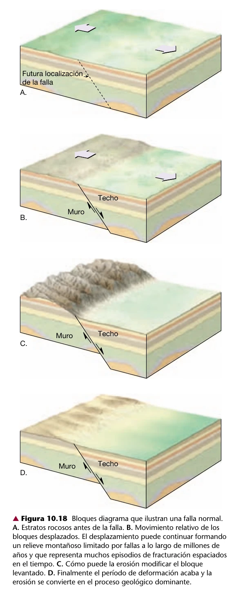
Extensión
Falla normal
En una falla normal, el bloque situado sobre el plano de falla desciende respecto al bloque inferior. La geometría es compatible con una corteza que se extiende o adelgaza.
Guía visual de campo
Si nadie vio aquel terremoto y ningún instrumento lo registró, ¿cómo sabemos que ocurrió? La respuesta está escrita en pendientes, ríos y capas de roca. Esta historia te enseña a leerlas.
Explorar el mapa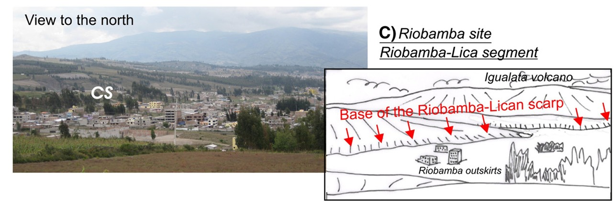
La primera pista no es una línea dibujada en un mapa. Es una anomalía: un cambio de pendiente, una cresta demasiado recta, un valle alineado o un drenaje que parece desplazado.
Cada una de esas formas puede tener varias explicaciones. La erosión, los deslizamientos, la sedimentación y la actividad volcánica también construyen relieve. Por eso la pregunta correcta no es “¿hay una forma que parezca una falla?”, sino “¿qué explicación explica mejor todas las pistas juntas?”.
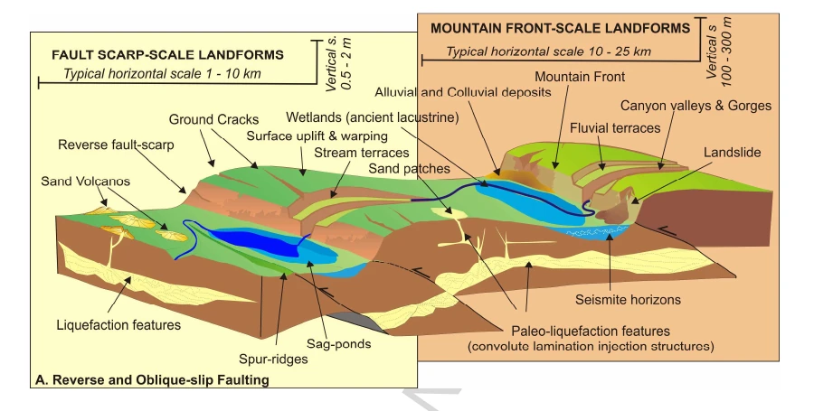
Una pista no basta

Extensión
En una falla normal, el bloque situado sobre el plano de falla desciende respecto al bloque inferior. La geometría es compatible con una corteza que se extiende o adelgaza.
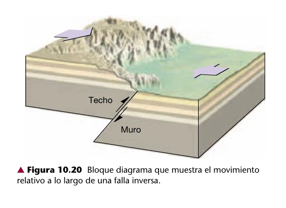
Compresión
En una falla inversa, el bloque situado sobre el plano asciende respecto al bloque inferior. Es una expresión común de acortamiento y compresión de la corteza.
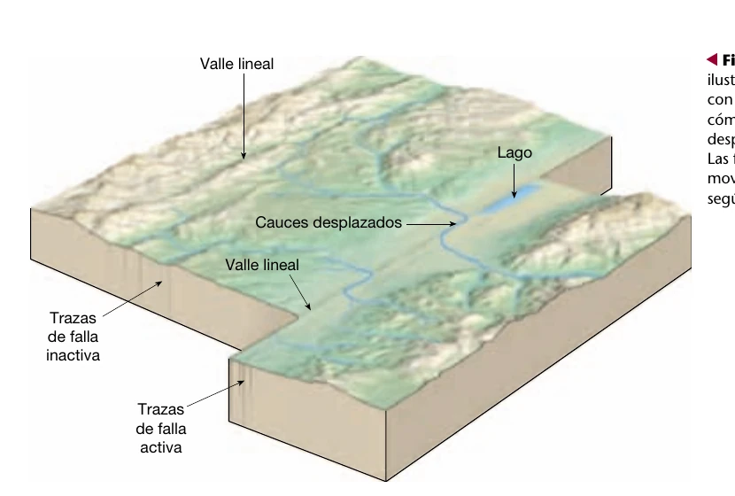
Cizalla
Los bloques se desplazan principalmente en horizontal, siguiendo el rumbo de la falla. El movimiento puede ser dextral o sinestral.
La forma del relieve sugiere una historia; la geometría de la falla, la geología de campo y otras mediciones permiten ponerla a prueba. No confundas una hipótesis razonable con una demostración.
Es una fractura —o una zona de fracturas— en la corteza donde existe desplazamiento relativo entre bloques de roca.
En superficie observamos la traza: la intersección aproximada entre la falla y el terreno. En profundidad, la estructura puede inclinarse, ramificarse y formar una zona compleja de deformación.
Mapear una falla es reconstruir una estructura tridimensional a partir de señales incompletas en la superficie y el subsuelo.
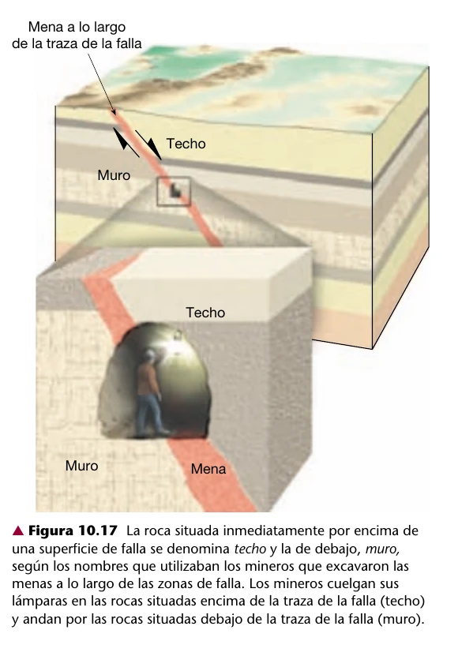
Las rocas pueden deformarse lentamente y almacenar energía. Cuando una zona de falla pierde resistencia y desliza de forma súbita, parte de esa energía viaja como ondas sísmicas.
El hipocentro es el punto donde comienza la ruptura en profundidad; el epicentro es su proyección en la superficie. La magnitud describe el tamaño físico del terremoto, mientras la intensidad describe sus efectos en un lugar.
Aquí aparece el problema que impulsa esta historia: los instrumentos solo han visto una fracción diminuta de la vida de muchas fallas.
Los instrumentos solo han visto una fracción diminuta de la historia de una falla. El paisaje y las rocas vieron el resto.Por eso hace falta leer la Tierra, no solo medirla
Una ruptura puede desplazar, fracturar, inclinar o plegar el terreno. Si nuevos sedimentos cubren después esa deformación, parte de la historia queda enterrada.
La paleosismología reconstruye terremotos anteriores a los instrumentos comparando capas, desplazamientos, relaciones de corte y edades. No encuentra una fecha escrita: construye la explicación que mejor satisface todas las observaciones.
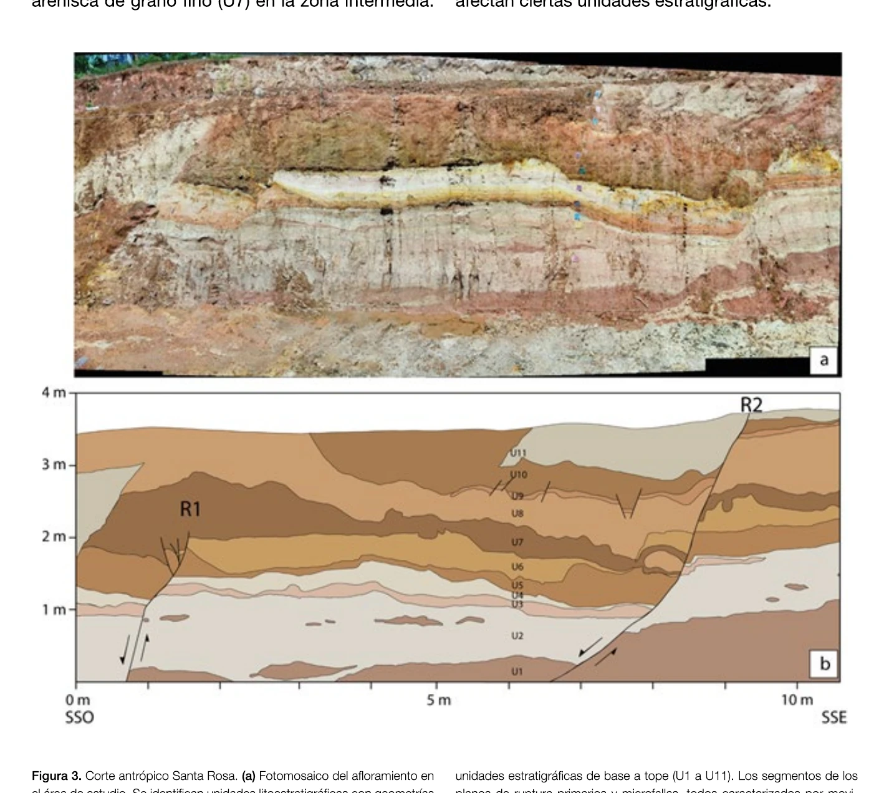
04Un corte antrópico se convirtió en una ventana al subsuelo. Allí se reconocieron once unidades y dos planos principales de ruptura. Su orden y desplazamiento permiten proponer al menos dos paleoeventos.
Observa las capas U1-U11 y los planos R1 y R2. La interpretación combina relaciones de corte, microfallas y deformación sedimentaria. Cornejo et al. (2024), fig. 3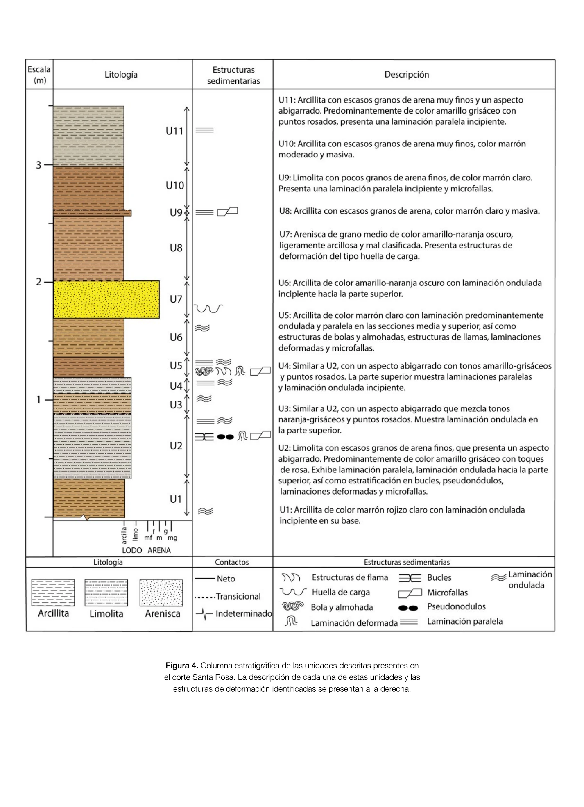
05Litología, color, tamaño de grano y estructuras sedimentarias permiten reconocer unidades y comparar qué ocurre a ambos lados de la ruptura.
Cornejo et al. (2024), fig. 4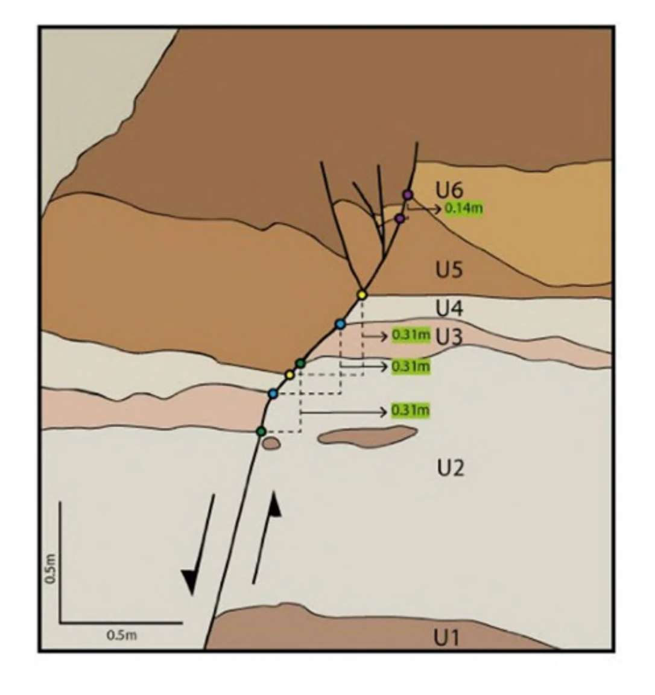
06Los marcadores equivalentes se llevan mentalmente a su posición anterior. La separación necesaria cuantifica el desplazamiento vertical observado.
Cornejo et al. (2024), fig. 7Las capas establecen relaciones de antes y después; las edades independientes sitúan esos intervalos en el tiempo. Así se separan eventos posibles sin asumir que cada anomalía fue necesariamente un terremoto.
La longitud de ruptura y el desplazamiento pueden alimentar relaciones empíricas de magnitud. El resultado es una estimación con incertidumbre, no una lectura exacta.
Ruptura superficial, plegamiento, deslizamientos y licuefacción amplían el registro más allá del daño a construcciones, pero cada señal debe contrastarse con causas no sísmicas.
Geomorfología tectónica
Un escarpe, una faceta o un río desplazado pueden ser compatibles con tectónica, pero también pueden originarse por otros procesos. La interpretación gana fuerza cuando varias señales independientes cuentan la misma historia.
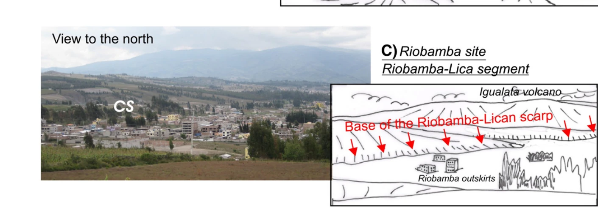
01Un cambio lineal o abrupto de pendiente puede reflejar desplazamiento o plegamiento tectónico. También puede ser producido o modificado por erosión y procesos de ladera.
Observa el desnivel acumulado y la coincidencia entre la fotografía y el croquis de campo. Baize et al. (2015), fig. 6C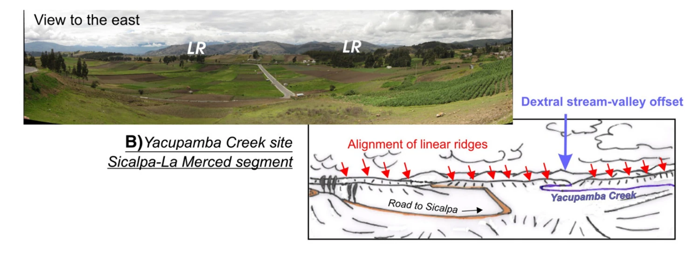
02En Yacupamba, una fotografía de campo y un croquis muestran cómo la alineación de crestas y el desplazamiento lateral de un cauce se comparan para probar una hipótesis tectónica.
Observa la continuidad de las crestas y la separación entre los dos tramos del cauce. Baize et al. (2015), fig. 6B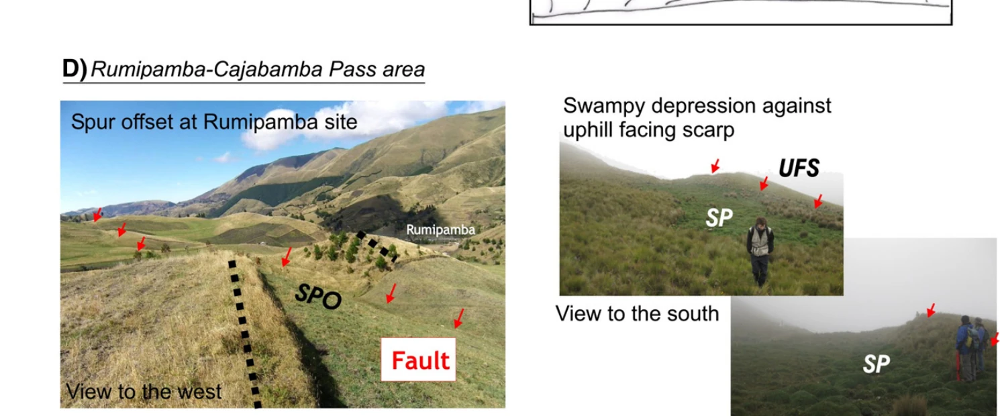
03En Rumipamba, el escarpe que mira cuesta arriba retiene sedimento y agua. La foto no demuestra por sí sola la falla: se vuelve evidencia al coincidir con la traza y otras formas.
Observa el quiebre de pendiente, la depresión y la relación espacial con la traza marcada. Baize et al. (2015), fig. 6DEntre Ambato y Latacunga, pliegues, flexuras y superficies inclinadas alteran un valle que, visto de lejos, parece casi plano.
El perfil A-A' cruza varias anomalías topográficas compatibles con una componente inversa cerca de la superficie. El perfil, por sí solo, no determina de forma única la cinemática.
La hipótesis se fortalece porque el relieve coincide con observaciones de fallas inversas entre depósitos volcánicos cuaternarios y con pliegues que modifican el drenaje alrededor de Yambo.
La lección no es seguir una flecha roja: es comprobar si topografía, geología y deformación actual pueden contar una historia compatible.

Del paisaje a la prueba
No existe una herramienta mágica. Combinamos observaciones que responden preguntas distintas: dónde está la estructura, cuánto se movió, cuándo ocurrió y qué parte de la deformación continúa.
Cartografía y campo: reconocen contactos, fracturas, pliegues, desplazamientos y relaciones de corte.
Modelos de elevación, fotogrametría y LiDAR: revelan y miden escarpes, flexuras, terrazas y drenajes.
Geofísica: rastrea contrastes y estructuras bajo la superficie mediante sísmica, GPR o tomografía eléctrica.
Trincheras: exponen capas cortadas, plegadas o desplazadas para ordenar eventos y buscar edades.
Geocronología: radiocarbono, luminiscencia y otros métodos acotan la edad de depósitos y superficies.
GNSS, InSAR y monitoreo: miden deformación actual o intersísmica y la conectan con el registro geológico.
El objetivo no es coleccionar mapas: es reducir incertidumbre. Cada técnica aporta una pieza distinta y la interpretación se fortalece cuando las piezas son compatibles.
Laboratorio interactivo
Observa el desplazamiento, identifica la geometría y formula una hipótesis antes de mirar la respuesta.
Esquema conceptual · no está a escala
Detalles que cambian la mirada
Una falla puede ser una zona ancha y compleja, no una línea fina.
Pequeños desplazamientos acumulados durante miles de años pueden construir relieves enormes.
Los ríos guardan memoria, pero sus curvas siempre deben interpretarse dentro del contexto geomorfológico.
Activa no significa inminente. Una traza no predice la fecha del próximo terremoto.
Método de exploración
Busca cambios de pendiente, alineamientos, valles, terrazas, drenajes y cualquier forma que rompa el patrón esperado.
Pregunta si el patrón puede explicarse por erosión, sedimentación, volcanismo, gravedad o tectónica. Una buena hipótesis compite con otras.
Compara topografía, geología, campo, geofísica, cronología y, cuando exista, sismicidad. Cuantas más líneas de evidencia sean compatibles, más sólida es la interpretación.
Para seguir explorando
Esta guía usa fuentes institucionales y bibliografía de referencia para explicar conceptos generales. Las interpretaciones de sitios concretos deben consultarse en sus fuentes originales.
Cada capa tiene una procedencia y un grado de incertidumbre distintos. El visor los mantiene separados para que explorar no se convierta en confundir una señal con una prueba.
Ahora mira el territorio
Activa la topografía, compara capas y sigue las formas del relieve. La idea no es encontrar una línea y llamarla falla: es conectar patrón, evidencia e interpretación.
En el visor puedes comparar fallas, sismos y relieve, y volver a cada ficha para revisar su fuente y nivel de confianza.